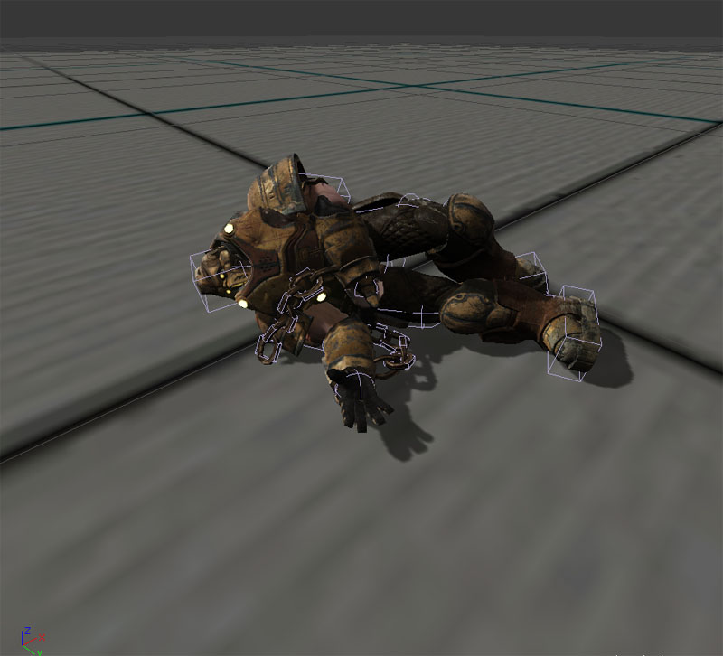

UDN
Search public documentation:
PhysicalAnimation
日本語訳
中国翻译
한국어
Interested in the Unreal Engine?
Visit the Unreal Technology site.
Looking for jobs and company info?
Check out the Epic games site.
Questions about support via UDN?
Contact the UDN Staff
中国翻译
한국어
Interested in the Unreal Engine?
Visit the Unreal Technology site.
Looking for jobs and company info?
Check out the Epic games site.
Questions about support via UDN?
Contact the UDN Staff
UE3 Home > Physics > Physical Animation
UE3 Home > Animation > Physical Animation
UE3 Home > Animators > Physical Animation
UE3 Home > Skeletal Meshes > Physical Animation
UE3 Home > Animation > Physical Animation
UE3 Home > Animators > Physical Animation
UE3 Home > Skeletal Meshes > Physical Animation
Physical Animation
Overview
There are often situations where physics simulations must be performed on attachments to achieve the desired animation. For example, chains on a prisoner that rattle around or rag dolls for an unconscious character that flops around. As the characters moves and blends between different animations, it's impossible to predetermine where things may be. Unreal Engine 3 solves this problem by allowing animators and programmers to define some or all bones in a skeletal mesh as physically simulated rigid body attachments. A character that has chains attached to the arms that are driven by physics, with the rest of the body driven by blended animations and inverse kinematics. A character that is using physics to simulate the whole body. 
Pipeline
The physical animation system is part of the Unreal Engine 3 animation pipeline. First, the normal animation is processed when blending is handled via the Anim Tree. Secondly, inverse kinematic control is then applied via the Anim Tree. Lastly, the physics is applied to the skeleton via the Physics Asset. The physics sub system then processes the remaining physics, and the graphics sub system then renders the scene. The physics for the skeleton is calculated based on whether the bone is fixed or not. Fixed bones are never simulated by physics and will be driven by the blended animation and inverse kinematic system. Unfixed bones will be simulated by physics.

Workflow
A programmer and an animator will work together to produce the needed physical animation content. The animator will set up the physics asset which involves locking the bodies and simulating the system to see how it all ties together. The programmer will then be responsible for enabling or disabling physical animation depending on the game play.
Controlling Physics
Types of Physics
There are two types of physics:- Kinematic ("fixed")
- Goes exactly where you say
- Ignores collisions
- Pushes objects it hits very hard
- Dynamic ("unfixed")
- Responds realistically to collisions
- Need to use forces or constraints to control it
Physics Objects
There are three physics objects:- Forces
- Used to apply a constant force (such as gravity or wind)
- Impulse
- Used to apply a one off force (such as explosions or gun shots)
- Constraint
- Used to apply a continuous force (such as joints or springs)
Partial physical simulation on skeletal meshes
A common effect in modern games is to have some parts perform physics simulation, while the rest of the character animates using blended animations and inverse kinematics. The easiest way to set this up is to make the character's skeletal mesh contain all bones, including those for the physically simulated parts. Shown below is the skeleton used for the chained character. This also means you should create a PhysicsAsset for the skeletal mesh using the PhAT tool, including the bones that you want to be physical simulated. You can preview how these physics parts will look in PhAT by 'fixing' all but those bodies (which can be easily done by right-clicking in the tree view and choosing Unfix All Bodies Below.. or Fix All Bodies Below... You can also set the fixed status of individual rigid bodies by clicking on the bone and checking or unchecking the Fixed property. During simulation in the tool, you can assign an AnimSet in the Preview Anim Set option, and pick an animation (such as a run cycle) from the drop down on the tool bar to loop. Press the play button to loop the animation, or the stop button to stop the animation. You can change the animation on the fly without having to stop the simulation. You can also check the Blend On Poke property, which will allow you to use the left mouse button to poke the skeletal mesh and have it blend between partial and full physical simulation. Make sure to assign the PhysicsAsset to your character in game, and set bHasPhysicsAssetInstance to true.
 Now when you run the game, and type nxvis collision in the console, you should see white shapes for the physics objects of your character. However they aren't physically simulating just yet.
What needs to be considered is how the physics for these bones will be blended into the animations of your character. Normally you use the PhysicsWeight parameter on the skeletal mesh component to choose how much to blend between the output of the physics engine and the output of the animation system. In this case, you want to have these particular bones to always use the output of the physics engine, even when PhysicsWeight is zero. To do this, there is a parameter called bAlwaysFullAnimWeight on each rigid body within the physics asset. Set this to true for all these bones. You will also need to set bEnableFullAnimWeightBodies to true on the skeletal mesh component.
When an actor's physics is PHYS_RigidBody, rigid bodies default to the fixed state that is defined in the physics asset. However, characters that are running around are normally are usually in PHYS_Walking or PHYS_Falling etc, all rigid bodies default to fixed; regardless of what is defined in the physics asset. In order to have the physics simulate on our these rigid bodies, it is required to explicitly 'unfix' them in code. There is a helpful function called SetFullAnimWeightBonesFixed within PhysicsAssetInstance. If you look at SkeletalMeshActor you can see an example of unfixing the flagged rigid bodies inside PostBeginPlay.
Now when you run the game, and type nxvis collision in the console, you should see white shapes for the physics objects of your character. However they aren't physically simulating just yet.
What needs to be considered is how the physics for these bones will be blended into the animations of your character. Normally you use the PhysicsWeight parameter on the skeletal mesh component to choose how much to blend between the output of the physics engine and the output of the animation system. In this case, you want to have these particular bones to always use the output of the physics engine, even when PhysicsWeight is zero. To do this, there is a parameter called bAlwaysFullAnimWeight on each rigid body within the physics asset. Set this to true for all these bones. You will also need to set bEnableFullAnimWeightBodies to true on the skeletal mesh component.
When an actor's physics is PHYS_RigidBody, rigid bodies default to the fixed state that is defined in the physics asset. However, characters that are running around are normally are usually in PHYS_Walking or PHYS_Falling etc, all rigid bodies default to fixed; regardless of what is defined in the physics asset. In order to have the physics simulate on our these rigid bodies, it is required to explicitly 'unfix' them in code. There is a helpful function called SetFullAnimWeightBonesFixed within PhysicsAssetInstance. If you look at SkeletalMeshActor you can see an example of unfixing the flagged rigid bodies inside PostBeginPlay.
simulated event PostBeginPlay()
{
// grab the current mesh for replication
if (Role == ROLE_Authority && SkeletalMeshComponent != None)
{
ReplicatedMesh = SkeletalMeshComponent.SkeletalMesh;
}
// Unfix bodies flagged as 'full anim weight'
if (SkeletalMeshComponent != None &&
//SkeletalMeshComponent.bEnableFullAnimWeightBodies &&
SkeletalMeshComponent.PhysicsAssetInstance != None)
{
SkeletalMeshComponent.PhysicsAssetInstance.SetFullAnimWeightBonesFixed(FALSE, SkeletalMeshComponent);
}
if(bHidden)
{
SkeletalMeshComponent.SetClothFrozen(TRUE);
}
}
Full physical simulation on skeletal meshes
- bHasPhysicsAssetInstance must be true. This will ensure that the physics sub system instances the physics asset for this skeletal mesh. This is not necessary for per-bone line checks on the skeletal mesh.
- The actor that owns the skeletal mesh does not require the physics mode be set to PHYS_RigidBody. This just ensures that the actor's location and rotation matches the root body's location and rotation.
- Unfix the rigid body instances that you want to be dynamic by calling SetFixed(false) which is defined in RB_BodyInstance.
- Ensure physics is blended in for those bodies
- Set PhysicsWeight to a value greater than zero in the skeletal mesh component.
- Set bEnableFullAnimWeightBodies to true in the skeletal mesh component.
- Set bAlwaysFullAnimWeight to true in RB_BodySetup.
simulated function bool Died(Controller Killer, class<DamageType> DamageType, vector HitLocation)
{
if (Super.Died(Killer, DamageType, HitLocation))
{
Mesh.MinDistFactorForKinematicUpdate = 0.f;
Mesh.SetRBChannel(RBCC_Pawn);
Mesh.SetRBCollidesWithChannel(RBCC_Default, true);
Mesh.SetRBCollidesWithChannel(RBCC_Pawn, false);
Mesh.SetRBCollidesWithChannel(RBCC_Vehicle, false);
Mesh.SetRBCollidesWithChannel(RBCC_Untitled3, false);
Mesh.SetRBCollidesWithChannel(RBCC_BlockingVolume, true);
Mesh.ForceSkelUpdate();
Mesh.SetTickGroup(TG_PostAsyncWork);
CollisionComponent = Mesh;
CylinderComponent.SetActorCollision(false, false);
Mesh.SetActorCollision(true, false);
Mesh.SetTraceBlocking(true, true);
SetPhysics(PHYS_RigidBody);
Mesh.PhysicsWeight = 1.0;
if (Mesh.bNotUpdatingKinematicDueToDistance)
{
Mesh.UpdateRBBonesFromSpaceBases(true, true);
}
Mesh.PhysicsAssetInstance.SetAllBodiesFixed(false);
Mesh.bUpdateKinematicBonesFromAnimation = false;
Mesh.SetRBLinearVelocity(Velocity, false);
Mesh.ScriptRigidBodyCollisionThreshold = MaxFallSpeed;
Mesh.SetNotifyRigidBodyCollision(true);
Mesh.WakeRigidBody();
return true;
}
return false;
}
Unreal Editor
- SkeletalMeshActor and its children are capable of using physics to simulate some bones on skeletal meshes.
- KAsset and its children may be placed in the level to do full physics simulation on skeletal meshes.
Useful console commands
- nxvis collision - shows the collision bodies used by the physics simulation. Use this over show collision, as show collision only shows the collision hulls used for the Unreal physics sub system.
- show bones - shows the bone's location and rotation used to render the animated skeletal mesh.
- show prephysbones - shows the bone's location and rotation after blended animation and inverse kinematics is applied but before physics is applied. Notice how the bones of the chains is pointing straight out, this is because there is no predefined animations made for them. But after physics is applied, the chains are in the correct position.
Examples
A general purpose Actor was created for all examples below. For each example the Unrealscript logic flow is listed.
Unrealscript
class HitReactionPawn extends SkeletalMeshCinematicActor;
// Death animation
var(HitReaction) Name DeathAnimName;
// Bone names to unfix when hit reaction is simulated
var(HitReaction) array<Name> UnfixedBodyNames;
// Bone names to enable springs when hit reaction is simulated
var(HitReaction) array<Name> EnabledSpringBodyNames;
// Linear bone spring strength to use when hit reaction is simulated
var(HitReaction) float LinearBoneSpringStrength;
// Angular bone spring strength to use when hit reaction is simulated
var(HitReaction) float AngularBoneSpringStrength;
// Radius of the force to apply
var(HitReaction) float ForceRadius;
// Force amplification
var(HitReaction) float ForceAmplification;
// Maximum amount of force that can be applied
var(HitReaction) float MaximumForceThatCanBeApplied;
// Blend in time for the hit reaction
var(HitReaction) float PhysicsBlendInTime;
// Physics simulation time for the hit reaction
var(HitReaction) float PhysicsTime;
// Blend out time for the hit reaction
var(HitReaction) float PhysicsBlendOutTime;
// Full body rag doll
var(HitReaction) bool FullBodyRagdoll;
var Name PreviousAnimName;
event TakeDamage(int DamageAmount, Controller EventInstigator, vector HitLocation, vector Momentum, class<DamageType> DamageType, optional TraceHitInfo HitInfo, optional Actor DamageCauser)
{
local AnimNodeSequence AnimNodeSequence;
Super.TakeDamage(DamageAmount, EventInstigator, HitLocation, Momentum, DamageType, HitInfo, DamageCauser);
if (SkeletalMeshComponent == None || SkeletalMeshComponent.PhysicsAssetInstance == None)
{
return;
}
if (IsTimerActive(NameOf(SimulatingPhysicsBlendIn)) || IsTimerActive(NameOf(SimulatingPhysics)) || IsTimerActive(NameOf(SimulatedPhysicsBlendOut)))
{
return;
}
if (FullBodyRagdoll)
{
if (DeathAnimName != '')
{
AnimNodeSequence = AnimNodeSequence(SkeletalMeshComponent.Animations);
if (AnimNodeSequence != None)
{
PreviousAnimName = AnimNodeSequence.AnimSeqName;
AnimNodeSequence.SetAnim(DeathAnimName);
AnimNodeSequence.PlayAnim();
AnimNodeSequence.bCauseActorAnimEnd = true;
return;
}
}
else
{
TurnOnRagdoll(Normal(Momentum) * FMin(DamageAmount * ForceAmplification, MaximumForceThatCanBeApplied));
}
}
else
{
if (DeathAnimName != '')
{
AnimNodeSequence = AnimNodeSequence(SkeletalMeshComponent.Animations);
if (AnimNodeSequence != None)
{
PreviousAnimName = AnimNodeSequence.AnimSeqName;
AnimNodeSequence.SetAnim(DeathAnimName);
AnimNodeSequence.PlayAnim();
AnimNodeSequence.bCauseActorAnimEnd = true;
return;
}
}
else
{
TurnOnRagdoll(Vect(0.f, 0.f, 0.f));
// Apply the impulse
SkeletalMeshComponent.AddRadialImpulse(HitLocation - (Normal(Momentum) * 16.f), ForceRadius, FMin(DamageAmount * ForceAmplification, MaximumForceThatCanBeApplied), RIF_Linear, true);
// Wake up the rigid body
SkeletalMeshComponent.WakeRigidBody();
}
}
BlendInPhysics();
}
event OnAnimEnd(AnimNodeSequence AnimNodeSequence, float PlayedTime, float ExcessTime)
{
TurnOnRagdoll(Vect(0.f, 0.f, 0.f));
BlendInPhysics();
AnimNodeSequence.bCauseActorAnimEnd = false;
}
function TurnOnRagdoll(Vector RBLinearVelocity)
{
// Force update the skeleton
SkeletalMeshComponent.ForceSkelUpdate();
// Fix the bodies that don't need to play a part in the physical hit reaction
if (UnfixedBodyNames.Length > 0)
{
SkeletalMeshComponent.PhysicsAssetInstance.SetNamedBodiesFixed(false, UnfixedBodyNames, SkeletalMeshComponent,, true);
}
else
{
SkeletalMeshComponent.PhysicsAssetInstance.SetAllBodiesFixed(false);
}
// Enable springs on bodies that are required in the physical hit reaction
if (EnabledSpringBodyNames.Length > 0)
{
SkeletalMeshComponent.PhysicsAssetInstance.SetNamedRBBoneSprings(true, EnabledSpringBodyNames, LinearBoneSpringStrength, AngularBoneSpringStrength, SkeletalMeshComponent);
}
SkeletalMeshComponent.bUpdateKinematicBonesFromAnimation = false;
SkeletalMeshComponent.SetRBLinearVelocity(RBLinearVelocity, true);
SkeletalMeshComponent.WakeRigidBody();
}
function BlendInPhysics()
{
// Set the timer for the physics to blend in
if (PhysicsBlendInTime > 0.f)
{
SetTimer(PhysicsBlendInTime, false, NameOf(SimulatingPhysicsBlendIn));
}
else
{
SkeletalMeshComponent.PhysicsWeight = 1.f;
SimulatingPhysicsBlendIn();
}
}
function SimulatingPhysicsBlendIn()
{
if (PhysicsTime == 0.f)
{
SimulatingPhysics();
}
else
{
// Set the timer for the physics to stay
SetTimer(PhysicsTime, false, NameOf(SimulatingPhysics));
}
}
function SimulatingPhysics()
{
local AnimNodeSequence AnimNodeSequence;
// Set the timer for the physics to blend out
SetTimer(PhysicsBlendOutTime, false, NameOf(SimulatedPhysicsBlendOut));
if (PreviousAnimName != '')
{
AnimNodeSequence = AnimNodeSequence(SkeletalMeshComponent.Animations);
if (AnimNodeSequence != None)
{
AnimNodeSequence.SetAnim(PreviousAnimName);
AnimNodeSequence.PlayAnim(true);
}
}
}
function SimulatedPhysicsBlendOut()
{
// Set physics weight to zero
SkeletalMeshComponent.PhysicsWeight = 0.f;
SkeletalMeshComponent.ForceSkelUpdate();
if (FullBodyRagdoll)
{
SkeletalMeshComponent.PhysicsAssetInstance.SetAllBodiesFixed(true);
SkeletalMeshComponent.bUpdateKinematicBonesFromAnimation = true;
}
else
{
SkeletalMeshComponent.bUpdateKinematicBonesFromAnimation = true;
if (UnfixedBodyNames.Length > 0)
{
SkeletalMeshComponent.PhysicsAssetInstance.SetNamedBodiesFixed(true, UnfixedBodyNames, SkeletalMeshComponent,, true);
}
else
{
SkeletalMeshComponent.PhysicsAssetInstance.SetAllBodiesFixed(true);
}
// Disable springs on bodies that were required in the physical hit reaction
if (EnabledSpringBodyNames.Length > 0)
{
SkeletalMeshComponent.PhysicsAssetInstance.SetNamedRBBoneSprings(false, EnabledSpringBodyNames, 0.f, 0.f, SkeletalMeshComponent);
}
}
// Put the rigid body to sleep
SkeletalMeshComponent.PutRigidBodyToSleep();
}
function Tick(float DeltaTime)
{
Super.Tick(DeltaTime);
if (IsTimerActive(NameOf(SimulatingPhysicsBlendIn)))
{
// Blending in physics
SkeletalMeshComponent.PhysicsWeight = GetTimerCount(NameOf(SimulatingPhysicsBlendIn)) / GetTimerRate(NameOf(SimulatingPhysicsBlendIn));
}
else if (IsTimerActive(NameOf(SimulatedPhysicsBlendOut)))
{
// Blending out physics
SkeletalMeshComponent.PhysicsWeight = 1.f - (GetTimerCount(NameOf(SimulatedPhysicsBlendOut)) / GetTimerRate(NameOf(SimulatedPhysicsBlendOut)));
}
}
defaultproperties
{
Begin Object Name=SkeletalMeshComponent0
bHasPhysicsAssetInstance=true
bUpdateJointsFromAnimation=true
End Object
ForceRadius=64.f
}
Physically simulated hit reactions
To add extra realism in games, characters should react as realistically as possible to the forces applied to them. Whether this is from an object in the world banging into them, or when they receive hits from a gun. There are two possibilities that can happen when a character is hit by a gun; depending on realistic you want your game to be.Arcade simulation
Arcade simulation only is used in games where movement and aim should not be impeded by the hit reaction. Thus players always retain full movement and aiming capabilities. This would be important in games such as Unreal Tournament 3 since the player should always be in control. This simulation will only apply physical changes to the upper part of the body, enable stiff angular springs in the hands and head to keep the gun and head pointing in the right direction. The properties of HitReactionPawn to achieve this are: Unrealscript logic flow:- TakeDamage is called when the player shoots the HitReactionPawn
- Check if there is a valid skeletal mesh component, physical asset instance and if the script is not currently in the middle of simulating physics
- FullBodyRagdoll is false and DeathAnimName is empty, thus turn on physics, apply a radial impulse to simulate the weapon hit and wake up the rigid body
- Unfix bodies defined in UnfixedBodyNames. If that is empty, it will unfix all bodies.
- Enable bone springs is defined in EnabledSpringBodyNames, and set the strengths of them using LinearBoneSpringStrength and AngularBoneSpringStrength.
- Bones no longer need to be updated via the animation, bUpdateKinematicBonesFromAnimation is set false.
- Blend In timer is set.
- When blend in timer is called, it will call the physics stay timer.
- When physics stay timer is called, it will call the blend out timer.
- After blending out, the process above is reversed.
- If the blend in timer is running, or the blend out timer is running, tick blends between animation and physics by adjusting the PhysicsWeight by finding the percentage of time passed with the timers.
Realistic simulation
In games where realism is the main factor, it may be useful to allow players to prevent enemies from aiming at them by firing at them or to stop enemies from charging and running away by shooting the enemies legs. The properties of HitReactionPawn to achieve this are: The unrealscript logic flow is the same above however, bone springs and their strengths have been set. This helps keep those bones as close as possible to the animation without it being too stiff.
The whole body is affected by the player's shot. Additional logic could be added to cause the affected pawn to trip and fall if desired (Blend into another animation, blend out physics, after some times blend in physics again to simulate the fall).
The unrealscript logic flow is the same above however, bone springs and their strengths have been set. This helps keep those bones as close as possible to the animation without it being too stiff.
The whole body is affected by the player's shot. Additional logic could be added to cause the affected pawn to trip and fall if desired (Blend into another animation, blend out physics, after some times blend in physics again to simulate the fall).
Death animations that blend into a rag doll
Rather than instantly rag dolling upon death, it may be desired for a short animation to play first. When the animation ends, the rag doll then blends in. The properties of HitReactionPawn to achieve this are: Unrealscript logic flow:- TakeDamage is called when the player shoots the HitReactionPawn
- Check if there is a valid skeletal mesh component, physical asset instance and if the script is not currently in the middle of simulating physics
- FullBodyRagdoll is false and DeathAnimName is not empty.
- Play the death animation and ensure that the anim node sequence that is playing it will call OnAnimEnd when the animation finishes.
- When OnAnimEnd is called, enable physics. For best results, do not set a blend in time otherwise the death sequence can be odd!
- Unfix bodies defined in UnfixedBodyNames. If that is empty, it will unfix all bodies.
- Enable bone springs is defined in EnabledSpringBodyNames, and set the strengths of them using LinearBoneSpringStrength and AngularBoneSpringStrength.
- Bones no longer need to be updated via the animation, bUpdateKinematicBonesFromAnimation is set false.
- Blend In timer is set.
- When blend in timer is called, it will call the physics stay timer.
- When physics stay timer is called, it will call the blend out timer.
- After blending out, the process above is reversed.
- If the blend in timer is running, or the blend out timer is running, tick blends between animation and physics by adjusting the PhysicsWeight by finding the percentage of time passed with the timers.